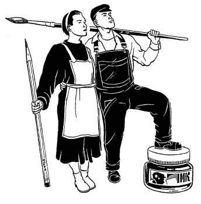

CAPTION
1997
CAPTION97

This convention took place in the summer of 1997. We decided to go for a pan-European theme this year, and had guests from all over. We also produced a 64-page anthology, Superstate Funnies, which contains strips by many European small-press cartoonists.